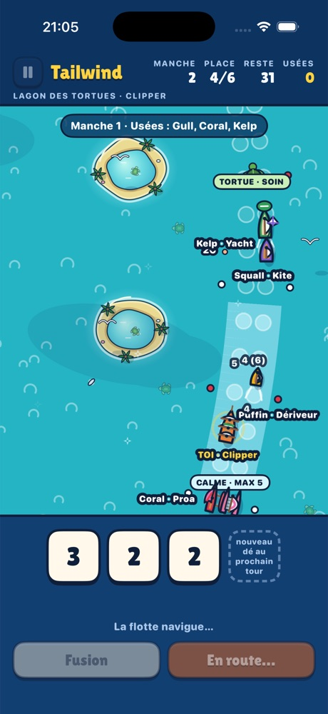
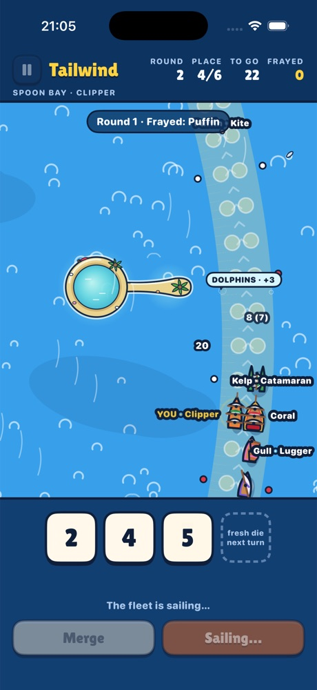
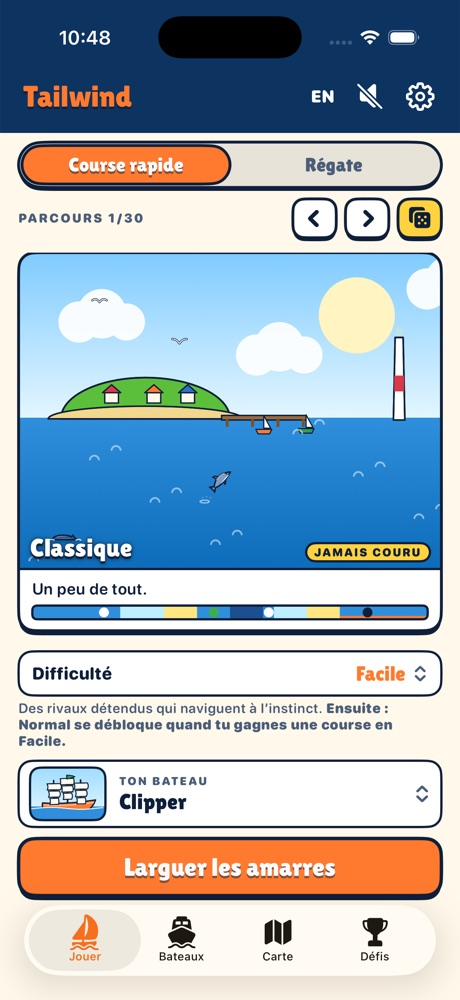
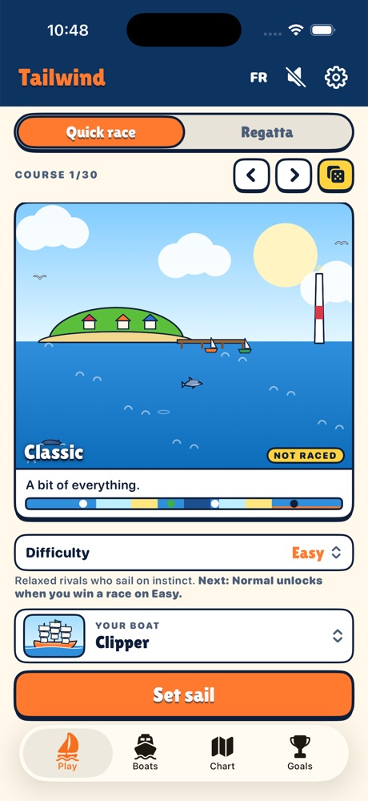
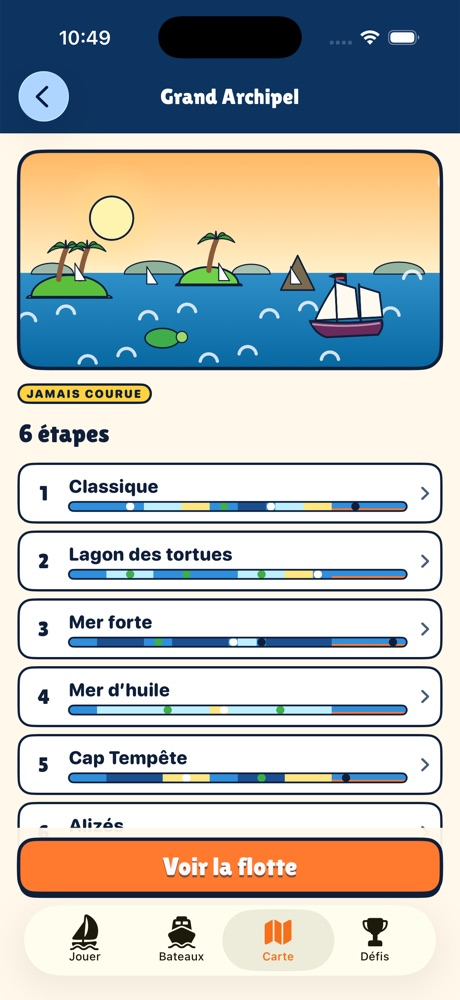
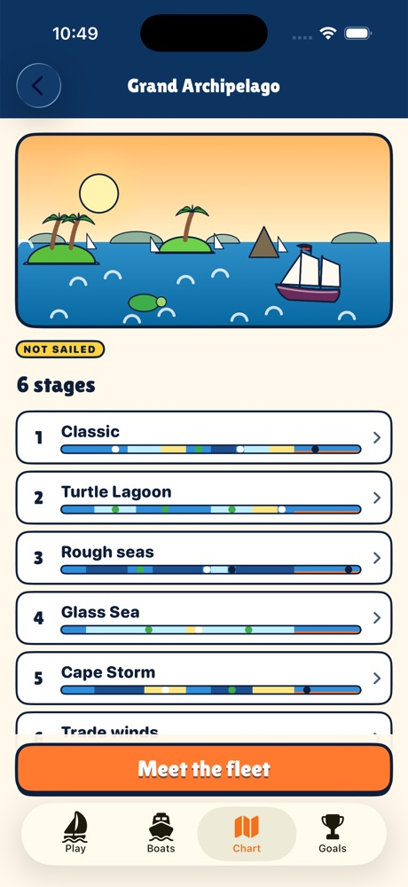
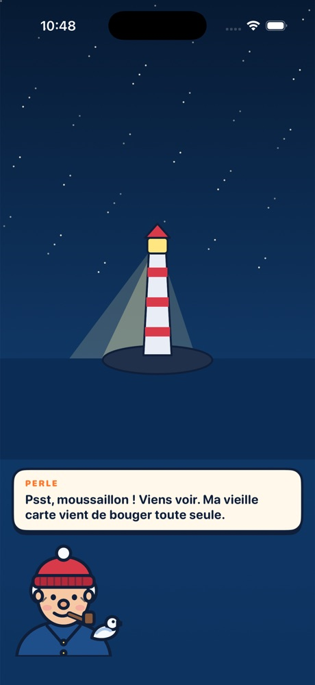
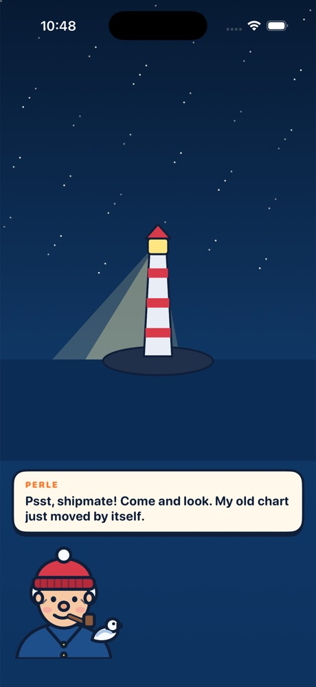

What's on boardÀ bord
- Short races that reward planning more than luck: your dice stay in hand, you choose when to play them.Des courses courtes où la stratégie compte plus que la chance : tes dés restent en main, c'est toi qui choisis quand les jouer.
- Regattas told like chapters, with Perle the lighthouse keeper as your guide and Admiral Corbeau's lieutenants waiting at sea.Des régates racontées comme des chapitres, avec Perle la gardienne de phare pour guide et les lieutenants de l'Amiral Corbeau qui t'attendent au large.
- Dolphins, turtles, whales, jellyfish, storms and night crossings. The sea is rarely on your side.Dauphins, tortues, baleines, méduses, tempêtes et traversées de nuit. La mer est rarement de ton côté.
- A whole fleet of boats with their own quirks, and a few secret ones for the curious.Toute une flotte de bateaux avec leur caractère, et quelques secrets pour les curieux.
- In English and French. iPhone, iOS 17 or later.En français et en anglais. iPhone, iOS 17 ou plus récent.
- Free to download. Unlock Tailwind for €2.99, once, to get the rest of the adventure. No ads, no subscription.Gratuit à télécharger. Débloque Tailwind pour 2,99 €, une seule fois, et profite du reste de l'aventure. Pas de pub, pas d'abonnement.